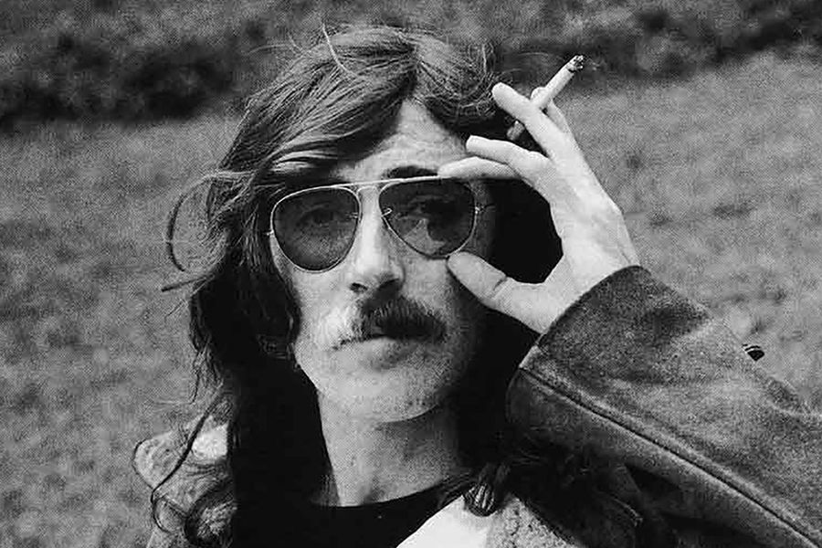
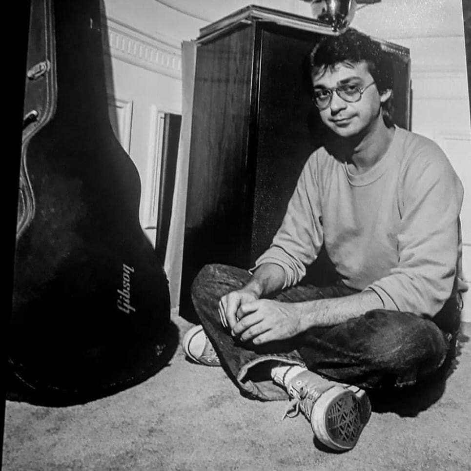
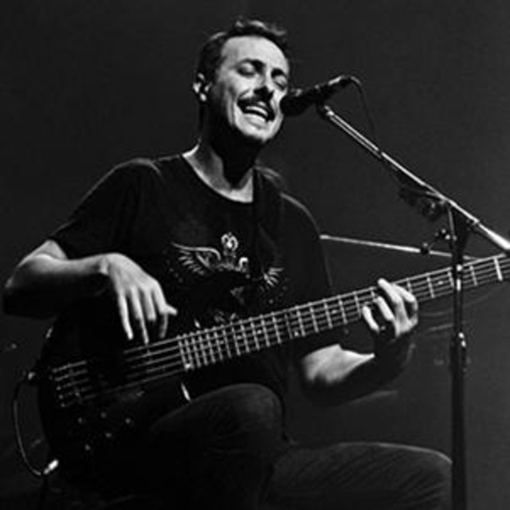

Charly García
Carlos Alberto García (Buenos Aires, 23 de octubre de 1951), conocido por su nombre artístico Charly García (a veces escrito como Charlie García), es un cantautor, vocalista, multinstrumentista, y productor discográfico argentino.Es considerado una de las figuras más importantes e influyentes en la historia de la música popular argentina. Siendo un adolescente, García fue uno de los fundadores de Sui Generis, una banda de folk rock, en el final de los años '60, donde publicarían tres exitosos álbumes de estudio cuyas canciones se transformaron en himnos para generaciones de argentinos.Luego de la separación del grupo en 1975, García tocaría en el único álbum del supergrupo PorSuiGieco,junto a Nito Mestre y otros músicos ya consagrados como León Gieco, su en ese entonces pareja, María Rosa Yorio, y Raúl Porchetto. Entre 1976 y 1977, formó parte de la banda de rock progresivo, La Máquina de Hacer Pájaros, considerada una de las bandas más importantes del rock progresivo latinoamericano. Más tarde, entre 1978 y 1982 formó parte de la superbanda de rock Serú Girán, uno de los grupos más importantes y revolucionarios durante el período de la dictadura militar argentina, donde compusieron temas desafiantes como Canción de Alicia en el País. Luego de componer la banda sonora de la película Pubis Angelical, y a la vez su propio disco, Yendo de la cama al living (1982), que le traerían excelentes críticas, García se embarcaría en una prolífica carrera como solista, donde compondría varias canciones generacionales de la música latina, a la par que buscaría expandir las barreras de la música pop, junto a su rol como músico. Su álbum Clics modernos (1983) fue considerado por la revista Rolling Stone como el segundo mejor de la historia del rock argentino.Además, otros siete de sus discos fueron incluidos también en dicha lista: Vida (1972), Pequeñas anécdotas sobre las instituciones (1974), PorSuiGieco (1976), Películas (1977), La grasa de las capitales (1979), Bicicleta (1980) y Piano bar (1984). Su canción «Rasguña las piedras» fue considerada en 2002 como la tercera mejor canción de todos los tiempos del rock argentino, y la 53a. del rock hispanoamericano.Las siguientes canciones de su autoría también han sido consideradas entre las 100 mejores del rock argentino: «Seminare», «Canción para mi muerte», «Demoliendo hoteles», «Los dinosaurios», «Yo no quiero volverme tan loco», «No llores por mi, Argentina», «Chipi chipi» y «Cerca de la revolución»
David Lebon
Oscar David Lebón (Buenos Aires, 5 de octubre de 1952) es un músico guitarrista y multiinstrumentista de rock argentino, fue durante mucho tiempo (70s y 80s) considerado el guitarrista emblema del movimiento. Formó parte de grupos trascendentales del rock argentino como Pappo's Blues (bajo y guitarra rítmica), Billy Bond y La Pesada del Rock and Roll (guitarra), Pescado Rabioso (voz, bajo y guitarra), Color Humano (batería y coros), Sui Generis (guitarra), Espíritu (teclados), Polifemo (voz, guitarra y bajo), Seleste (voz y guitarra) y Serú Girán (voz y guitarra), entre otros. Desde 1982 ha desarrollado una carrera solista de manera estable y la revista Rolling Stone lo ubicó en el tercer puesto de la lista "Los 100 mejores guitarristas del rock argentino".
Pedro Aznar
Pedro Aznar (Buenos Aires, 23 de julio de 1959) es un cantante, multiinstrumentista, compositor y poeta argentino. Fue integrante de los grupos Madre Atómica, Alas, Serú Girán, Spinetta Jade y Pat Metheny Group y desde 1993 está dedicado por completo a su carrera como solista. Ha editado más de 30 álbumes entre discos de estudio, grabaciones en vivo, bandas sonoras de películas y dúos con músicos como Charly García y David Lebón. También ha colaborado con las bandas progresivas Pastoral, Billy Bond and the Jets y Spinetta Jade. Además de 200 composiciones propias publicadas, en su carrera solista ha dedicado especial cuidado a grabar alrededor de 120 covers y arreglos de temas de músicos británicos, norteamericanos y latinoamericanos tales como Luis Alberto Spinetta, Gustavo Cerati, Charly García, Atahualpa Yupanqui, Víctor Jara, Violeta Parra, Congreso, Chabuca Granda, Chico César, Lenine, Cazuza, Chico Buarque, Tom Jobim, Milton Nascimento, Caetano Veloso, Gilberto Gil, Ivan Lins, Egberto Gismonti, Elton John, Jeff Buckley, The Beatles, Sting y Rolling Stones, entre muchos otros.
Oscar Moro
.jpg)
Oscar Moro (Rosario, 24 de enero de 1948 - Buenos Aires, 7 de agosto de 2006) fue un músico y baterista de rock argentino, miembro de algunas de las bandas de rock más importantes de la historia del país, como Los Gatos, Serú Girán y Riff. Moro fue un baterista versátil, que abordó numerosos géneros y estilos. Se alejó de los escenarios en los años 1990, a causa de una frágil salud, pero dejó una impronta decisiva en el rock argentino. El 7 de agosto se conmemora en Argentina el "Día del Baterista" en su homenaje